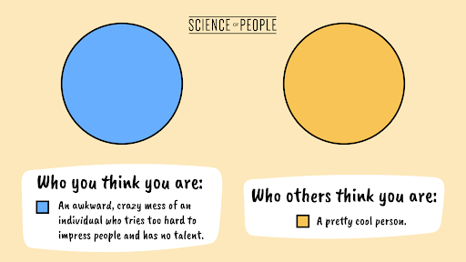

Sep 17, 2022
3 min read
“Not only does participating in a hackathon show potential employers that students have what it takes to thrive in fast-paced, high-pressure environments, but it also demonstrates not being afraid to get stuck in a challenge.”
First of all, let’s dive into knowing what hackathon is. It is an event where people engage in rapid and
collaborative engineering over a relatively short period. The word hackathon is a portmanteau of the
word’s hacker, which means clever programmer, and marathon, an event marked by endurance. It has goal to
create a working software or hardware at the end of the contest.
It helps you put your skills to work. Solve interesting business problems and real-world challenges. The
hackathon, also known as hack fest or hack day, was born out of the open-source community where the
first ever event labeled as hackathon was OpenBSD Hackathon in Calgary, Canada on June 4, 1999.
Many ideas are born from hackathons. Some of the ideas are also implemented in real life scenarios. For
example, one of the most popular features of Facebook, was developed during the hackathon. The idea of
like button, chat and even timeline were all conceived at hackathons.
Based on objectives, hackathon can have various types. Some of them can be based on demography, while some can be targeted to certain people. Depending on the circumstance’s hackathon can be classified into many types.
It is conducted by an organization for its employees or people working or associated with the organization. This helps in boosting and creating new ideas for their organization and helping with the personal development of the hackers.
It is conducted by an organization that engages people inside and outside the organization. This has the goal of creating a network of hackers, sharing a common goal of learning new things every day.
These hackathons are specified to have a goal to create a working application for certain platform being mobile, pc or web development, etc.
Some of the hackathons can have a specific language as prerequisite for participation in the hackathon like C++, Java, Python, etc.
Hackathons are also conducted with the goal of having well-being for certain areas. Some of them address the social well-being, healthcare, education and public services.
Depending on the platform or organization, you can signup for different hackathons as per your taste.
Considering the goal of the hackathon you can search them up by joining in different college related
social media sites, or even with social peers who are into the hackathons.
Considering your goal is also an important point to join for hackathon. You need to have a certain goal
to join a hackathon. You should have the mentality of learning something by joining the hackathon. No
one knows everything from the start, everyone starts from level 0 so joining a hackathon will help you
to start learning something new or something of your interest.
A stereotype is an oversimplified images or idea of a particular thing or person. It is the image that is created in your brain when you hear something about it. For example: when you say an athlete, an image of an athlete comes into your mind. The image of a young guy with very fit body starts to be created in your mind.
Surely there are some images that comes into your mind when you hear the word “Hackathon”. The image of
group of people with a laptop coding, where everyone looks super smart and very talented is created in
your mind.
Looks scary, doesn’t it?
That image has been stopping you from participating in your first hackathon, isn’t it?
Those images have made you back down from participating in a hackathon at the last moment, hasn’t it?
Well, those stereotypes are mostly fake and you can debunk them.
Some of the stereotypes that you usually come up to about a hackathon and how you can debunk them are:
Hackathon is not all about coding. Even if you are not related to the coding field, you can
participate and win a hackathon with your precious contributions. Your valuable asset can lead your
team to victory. You can help your team in the design of the project, becoming the project manager
or help with the research for your project.
You can help your team by guiding them towards their project by researching about the project,
helping with the design of the project. Not only that, you can also manage your team by becoming the
manager of the team. You can divide the work among your team mates and arrange the necessary stuffs
required for your team and guide them, yourself and the team towards the victory.
Once you start participating in the hackathon, even if you are a female, you can definitely win the
whole thing. All you need is, a good project idea and execute it with great dedication. There have
been many hackathons, where female have participated and showcased their great project ideas.
The 2021 Virtual Hackathon is one of those hackathons, where female have participated with great
enthusiasm and showcased their brain storming ideas related to IoT (Internet of Things).
The link to
the hackathon can be seen here:
https://devpost.com/software/iot-based-smart-pendant-and-electric-shock-glove
Also, there are female who has benefitted greatly from hackathon. A Software Engineer at LinkedIn
has shared her experiences by participating in hackathon in Bangalore, where she learned a lot of
new things.
You can definitely read up her blog here:
https://www.linkedin.com/pulse/why-first-women-hackathon-so-important-me-janki-akhani/
So, it is definitely not awkward for you to participate in the hackathon, rather consider it an
opportunity to show that you can go toe to toe with every male and debunk the stereotype.
You are just having an imposter syndrome. The people participating in the hackathon are the people of the same age as you or the people with the same enthusiasm about the technology.
There are people who have won hackathons in their first try, with no coding or engineering
backgrounds. Yes, sounds weird, but it’s true. Moshe Siegel, who made cold calls in sales, with
biology background from college, won hackathon from his first participation 2 wild days of research.
Moreover, hackathon is not all about winning. The things you learn and gain from the program is
greater than winning. You can make great social interaction with people with the same taste as you
have, participate in different workshops that the organizers have organized and who doesn’t like
free stuffs?
You can also win and get free stuffs.
It can also help you build your resume, which can help you to demonstrate your skills to recruiters
and get hands-on experiences.
You can find people like yourself, who are in search of a team. You can join the community of tech lovers, who will help you and create a team with you to participate in the hackathon. With many social media sites like discord, Facebook or even Instagram, you can find people who are willing to join your team and with your collaboration can definitely get a team who can win you and your team the hackathon and get hands on that prize and experience.
Now this is a sign for you to go and participate in your first hackathon. After participating you either
win the tournament, or return home with lots of connections and new ideas. Either way, it is a win-win.
It’s not only the prospect of winning but to develop an idea and learning new things which you can go to
in the near future.
Participating in your first hackathon will definitely be scary, but it is you and only you who can
either stay back and have regrets or go through the iron barrier and get into this new room of people
with like minds of new ideas and information regarding tech, the topic you are interested and keen to
gain more knowledge in.